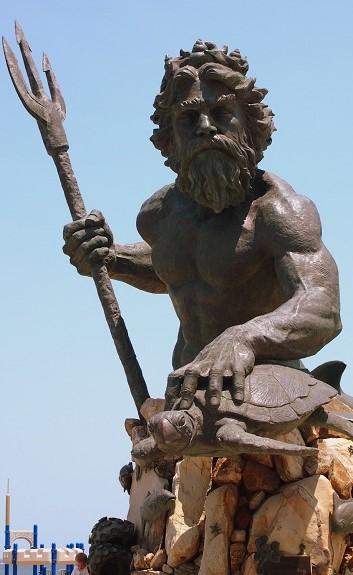

Neptun
Namen
- lateinisch: Neptun
- griechisch: Poseidon
Tätigkeitsfeld
Gott des Meeres und der Gewässer:
- Herrscher über alle Meere, Ozeane und Gewässer
- Kontrolle über Wellen, Stürme und Meeresströmungen
- verantwortlich für Überschwemmungen und Dürren
- Erderschütterer: Fähigkeit, Erdbeben und Tsunamis auszulösen
Schutzgott der Seefahrer und Fischer:
- wurde von Seeleuten um sichere Überfahrt angerufen
- Beschützer der Fischerei und maritimen Berufe
Schöpfer und Herr der Pferde
Fruchtbarkeitsgott:
- brachte durch Regen Fruchtbarkeit für die Felder
- wurde mit der Entstehung von Quellen in Verbindung gebracht
Attribute
- Dreizack
- von Pferden gezogener Wagen
- Stier
- Muschelhorn
- Fische
- Bart
